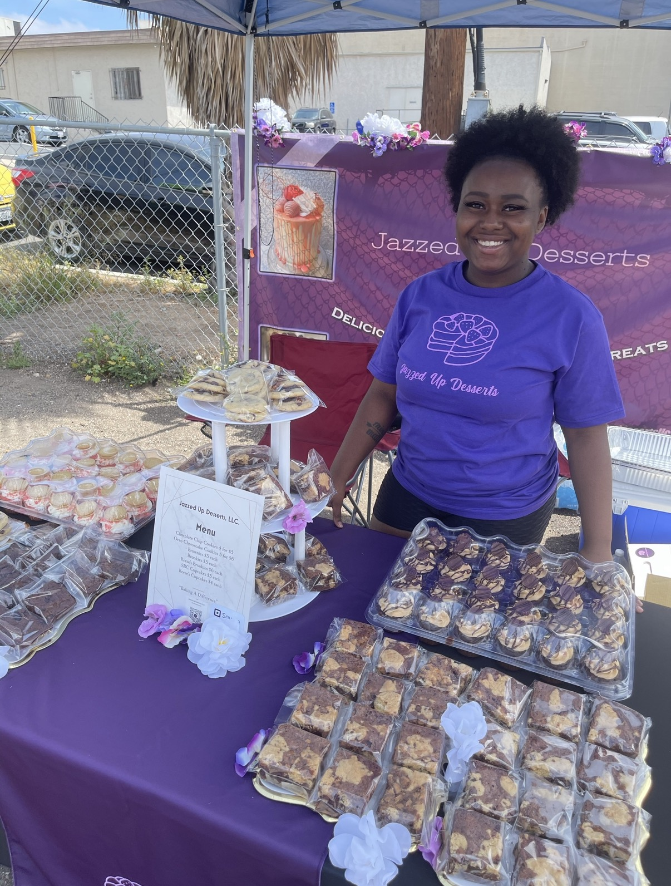

About Chef Jazmin
Chef Jazmin Lester is a dedicated pastry artist whose journey began during her six years of service in the United States Navy. While stationed in San Diego, California, she discovered her passion for baking and began creating custom desserts from her apartment kitchen, where early supporters encouraged her to pursue the craft professionally.
After completing her military service, Chef Jazmin relocated to San Antonio, Texas, to formally study the culinary arts at the prestigious Culinary Institute of America – San Antonio . Her education strengthened her technical skills, refined her creativity, and introduced her to the world of professional pastry work.
Following her academic training, she was selected for an externship with Disney Culinary and worked as a pastry chef at EPCOT in Walt Disney World. During her time with Disney, she gained hands-on experience producing high-volume, high-quality desserts for diverse guests, further elevating her craftsmanship and attention to detail.
After completing her externship, Chef Jazmin returned to her home state, where she now serves as a pastry chef at Superior Bakery. She continues to perfect her signature style, blending artistic presentation with bold, memorable flavors. Jazzed Up Desserts represents the culmination of her military discipline, culinary training, and passion for creating desserts that bring joy to every celebration.
//chef portrait 